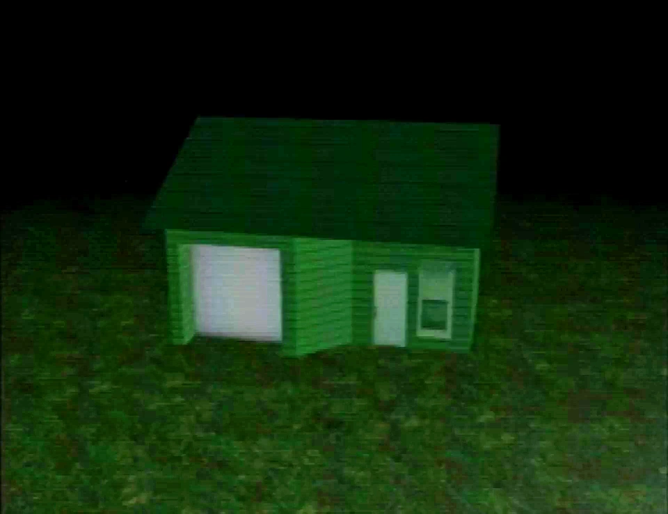
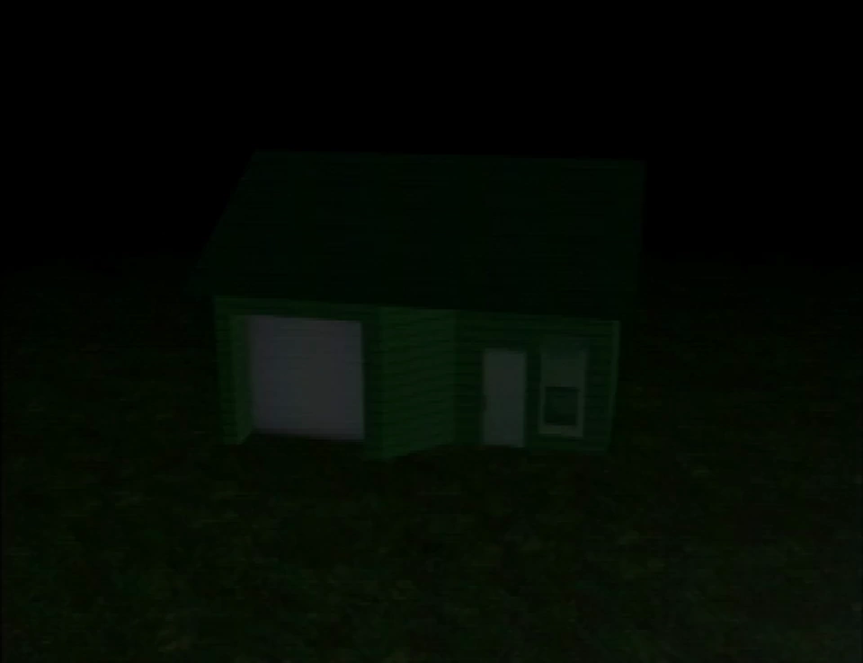

House
{kind=link}

{kind=link}
Image of the house, painted green (brightened)
The house is a major location in Petscop, reflecting the home of Anna and Marvin that exists outside of the game.
The tire, when asked "where is house?", appears to direct the player towards the house.
Three main variations of the house are seen throughout the series, each representing the house at a different date.
Outside the house
The house's exterior appears slightly different depending on the house's current variation. Initially, a single sign is outside the house, that can be interacted with to read "This is a frozen house, captured three times, exactly as it was." The sign changes to a different type of sign along with additional signs and balloons in the November 12 variation. After Marvin catches Care A for the first time on June 5, an interactive ladder appears outside Care's bedroom window.
{kind=link}
{kind=link}
{kind=link}
The house door is initially locked and closed. While the green key unlocks the door, the guardian cannot open the door. After Paul walks around for a while, the door opens on its own.
Road
A road is directly outside the house, going on for a while in two directions.
On the part of the road to the left of the house, there is an archway (similar to the one found on the Gift Plane road) with a symbol block next to it and a teal tool. The teal tool can be captured, using the bucket that appears in the house's living room, and brought back to the house. The symbol block has the symbol from the background of Roneth's room in Even Care, and the teal tool behaves similarly to Roneth.
{kind=link}
Rooms
The house has several rooms: a living room/kitchen, a bathroom, Care's bedroom, a master bedroom, and a garage.
Living room
The living room is the primary area of the house and contains doors to all of the other rooms.
{kind=link}
.png (169 KB)")
.png (419 KB)")
Bathroom
The bathroom is one of the rooms in the house. It is initially closed during the December variation, but opens as a part of its scene. It is consistently open in the June 1997 variation.
When Paul enters the bathroom for the first time, a small cutscene plays that zooms in/out of the TV in the living room. Initially there is a ramp and symbol block here, but they are later no longer present. The guardian is reflected in the mirror.
{kind=link}
{kind=link}
Care's bedroom
- "Care's room" redirects here. For her room in the Child Library, see Child Library.
In the house, there is a bedroom where Care A can be found; it is accessible in the June 1997 variation of the house. This room is furnished with a bed, a closet, a dresser, a high-up window with an air conditioner, and a very large, prominent clock. To the left of Care's door, there is a table with several objects (surrounded by pieces) on it.
In this room, Care sits on her bed. If the player approaches her, a transparent cube appears around her bed, prevent the player from interacting with her. After the player gets stuck in the room's closet, Marvin knocks an air conditioner down from the window above Care's bed and captures her. After this, the player may use a ladder outside of Care's window to repeat Marvin's actions and catch Care A.
When the player leaves the room after having caught Care A, the table next to her door shakes, and a text box reading "Care left the room" appears.
{kind=link}
Master bedroom
The master bedroom is first seen at the very beginning of Petscop 14 after a completely green screen. The room contains two beds, each with a desk at their side. The left bed is blue, and the desk next to it has framed CDs on its counter; the right bed is green, and has a miniature windmill on the counter. Both appear interactable when the player character passes them, but in this initial scene only the windmill's interactivity is shown: When x is pressed, a short riddle about a door is told.
Later on in the video, Paul carries out a specific input in regular gameplay to allow his recording to access the master bedroom again. This time, there are 11 pieces on the floor, and the windmill and right desk are both gone to be replaced by a censored object. Paul interacts with the desk of CDs to reveal each of the 15 frames in a 5x3 grid, which each make a sound when examined.
This room is directly accessible within the November 12th variation of the house.
{kind=link}
{kind=link}
Garage
The garage is a room in the house. It is initially locked, but can be unlocked using the garage key. Entering the garage under regular gameplay appears to cause the game to restart, and activate the "Strange situation" effect on the save file, but it can be visited normally once it has been activated. The room itself is very dark, as the garage door remains closed throughout most of the time it appears. The only light source in the room is from a Tarnacop computer screen, displaying the Petscop Discovery Pages. Close to the computer there is a fallen yellow office chair, along with a rake and shovel in the bottom left corner. An orange car appears in Petscop 16 and later videos.
The room appears to be a pre-rendered image in gameplay.
The garage makes a brief appearance in a loading screen towards the end of Petscop 23. The garage door is shown to be open and the yellow chair standing up properly, with the computer screen seemingly displaying the Garalina logo.
{kind=link}
.png (65 KB)")
.png (244 KB)")
")
Variations
Different variations of the house are shown, reflecting certain dates and times.
There are various calendars shown in different variations of the house that are meant to reflect the dates that each "capture" depicts.
- The green calendar is for 1997, and reflects Care's disappearance and reappearance.
- The gray calendar is for 2000, and reflects the other year Rainer "gave a gift" on Christmas.
- The red calendar is likely for 2017.
Christmas Day
Paul finds the house in Petscop 11 and goes inside. There is a living room with a Christmas tree surrounded by presents, a bathroom with a white block inscribed with a symbol (though the block disappears later in the video), Care's bedroom, and another door that is closed. After several text boxes appear, the bathroom door opens.
Care gets kidnapped
After Paul exits the bathroom, the date has changed. there are no longer Christmas decorations, there is a bucket, objects on a table covered by pieces, and a note.
Paul enters Care's bedroom which has a clock (reading 6:00), a closet, a window with an air conditioner, and Care A on a bed protected by some kind of translucent block that prevents her from being captured by the player. Paul gets locked in the closet while exploring, and Marvin busts down the air conditioner and captures Care before leaving the bedroom with the message "Care left the room.". The clock on the wall reads 6:15.
After Care's abduction, the closet door opens and the bedroom has been reset, with Care back on the bed and the air conditioner back in the window, so Paul explores the house only to see Marvin walk through a closed door. Paul leaves the house, finds a ladder, and mimics Marvin's capture of Care, adding her to his collection of Pets. Paul heads to the bathroom after being instructed to by Care A's description but can't see anything that has changed.
{kind=link}
Birthday party (Strange situation)
In Petscop 14, the "Strange situation" event occurs after Paul uses a recording (played through demo playback) to access the garage. After Paul's game restarts, his main save has been overwritten and renamed, with his other saves deleted. However, his pieces count is retained. When he reloads the file, the house has changed again, now depicting a birthday party taking place on November 12. The green and red calendars are on the wall, with the date November 12 animated on both of them. The red calendar is either of the year 1995 or 2017.
{kind=link}
{kind=link}
This variation appears to depict a birthday party for Care taking place at the house that occurs on November 12, 1997.
{kind=link}
{kind=link}
After walking into the master bedroom, events between 1997 and 2017 seem to go 'out of sync', with Care's mother speaking as though one set of events are happening but Paul experiencing something else. In 1997, the master bedroom door is closed and Care hurts her head attempting to walk into the door. In 2017 the door is open, and Paul walks inside. He tries viewing the discs on the table, but they are gone.
After some time in the bedroom, "Care" speaks, addressing Jill and demanding to know the location of the "disk" and the Petscop Discovery Pages. Paul comments that this appears to be based on a conversation he had with Jill "last year" on his birthday (presumably in 2017), even though that would be impossible if the game has been unmodified since the early 2000's. Paul tries to leave the room, but the game crashes. After restarting the game, he enters the garage. Inside the garage is an interactive computer that shows the website.
This version of the house is shown again in Petscop 17 when Room Impulse is used in gen 10.
History
{kind=link}

{kind=link}
Image of the house, painted green
The house is first depicted in Petscop 2, where an image of the house painted green can be viewed in a hallway under the Newmaker Plane.
In Petscop 6, while Paul is watching the windmill from the tool room, Marvin appears. One of the messages he spells out with blocks is "WHERE IS MY HOUSE", while he also constructs a depiction of the house.
In Petscop 7, the pink tool tells the player to "please show Marvin where his house is".
In Petscop 11, Paul finds the house.
Petscop 13 partially involves the house. Paul finds a teal tool on the road outside the house, and figures out that he can use the bucket in the house to catch it and bring it back to the house. The teal tool (covered in black paint) then removes the pieces from the contraption outside Care's room.
Petscop 14 entirely involves the house, as Paul discovers recording playback of the house's current state have different doors open.
Petscop 16 takes place entirely inside the garage as the Burn-in Monitor appears.
Petscop 17 starts off within the garage, and later uses Room Impulse to initially start in the house's living room. Petscop 18, Petscop 19, and Petscop 20 also still show that the player is operating the menus and playing back recordings from within the garage.
Theories
The name "Strange situation" may be a reference to the "Strange situation" psychological study. The event may be intended as a modified form of the procedure itself.
"Disk" is the term for magnetic storage, while "disc" refers to optical storage, such as a CD (like a PS1 game would be stored on). This may mean that "Care" (or Paul) was not referring to the game disc when asking for the "disks", if the different name was not an error.
Care bumping into the door in the birthday party variation may have been referenced by Rainer:
You ran away, crying, ashamed, covering your face.
You were blind. At some point, your movements stopped making sense.
Bumping into walls and doors. Dodging invisible obstacles.
| Gift Plane | Gift Plane · Even Care · Odd Care · Work Zone |
|---|---|
| Newmaker Plane | Newmaker Plane · Office · Grave room · Tool room · Quitter's Room · Child Library · Windmill · Party room · House · School |